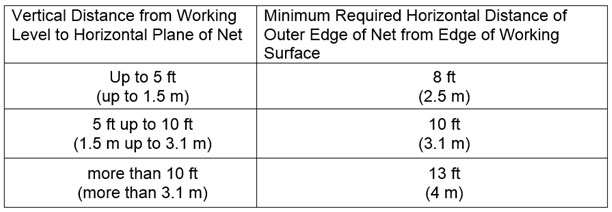

21.H Safety Net Systems for Fall Protection
21.H.01–21.H.07
▸Debris nets are addressed in Section 14.E Housekeeping.
21.H.01 Safety nets shall be installed as close under the work surfaces as practical but in no case more than 30 ft (9.1 m) below such work surface. Nets shall be hung with sufficient clearance to prevent contact with the surfaces or structures below. Such clearance shall be determined by impact load testing. When nets are used on bridges, multi-story buildings or structures, the potential fall area from the walking/working surface to the net shall be unobstructed.
- The maximum size of the mesh openings shall not exceed 36 in2 (230 cm2), nor be longer than 6 in (15 cm) on any side.
- The border rope or webbing shall have a minimum breaking strength of 5,000 lb (22.2 kN).
21.H.02 Nets shall extend outward from the outermost projection of the work surface as shown in Table 21-1.
21.H.03 Operations requiring safety net protection shall not be undertaken until the net(s) is in place and has either been tested without failure per a. and b. below, or complies with c. below.
- Safety nets and safety net installations shall be tested in the suspended position immediately after installation under the supervision of QP and in the presence of the GDA and before being used as a fall protection system; whenever relocated, after major repair; and when left at one location, at not more than 6 month intervals.
- The test shall consist of dropping into the net a 400 lb (180 kg) bag of sand, not more than 30 in+/- 2 in (76.2 cm +/- 5 cm) in diameter, at least 42 in (106.6 cm) above the highest working/walking surface at which workers are exposed to fall hazards. Means must be taken to ensure the weight can be safely retrieved after the test is conducted.
- If a QP can demonstrate in writing that it is unreasonable to perform the drop-test, the QP shall certify in writing that the net and installation (to include anchorages) is in compliance with all requirements for acceptance by the GDA. The certification must include an identification of the net and net installation, the date that it was determined, and the signature of the QP making the determination and certification. The certification shall remain at the job-site.
TABLE 21-1
Safety Net Distances

21.H.04 Shackles and hooks used in safety net installations shall be made of forged steel.
21.H.05 When used with safety nets, debris nets shall be secured on top of the safety net but shall not compromise the design, construction, or performance of the safety nets.
21.H.06 Materials, scrap pieces, equipment, and tools that have fallen into the safety net shall be removed as soon as possible and at least before the next work shift. Safety nets shall be protected from sparks and hot slag resulting from welding and cutting operations.
21.H.07 Inspection of safety nets.
- Safety nets shall be inspected by a CP in accordance with the manufacturer's instructions and recommendations.
- Inspections shall be conducted immediately after installation, at least weekly thereafter, and following any alteration, repair, or any occurrence that could affect the integrity of the net system. Inspections shall be documented.
- If any welding or cutting operations occur above the net(s), noncombustible barriers shall be provided. The frequency of inspections shall be increased in proportion to the potential for damage to the nets.
- Defective nets shall not be used. Defective components shall be removed from service and replaced.
{kind=link}